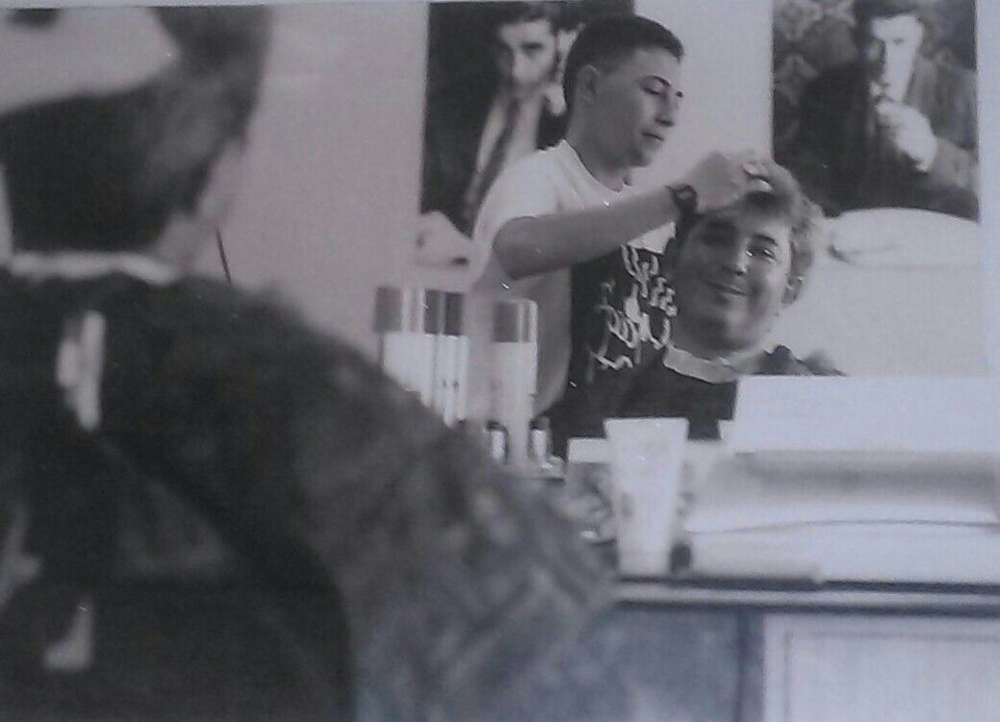

En el año 1991 comenzé en la Academia de Peluquería y Estética Lozano, ubicada en Los Remedios, el curso de señora y caballero. A partir de ese momento empecé a arreglar a familiares y amigos y a comenzar a realizar servicios a domicilios, p rincipalmente a personas mayores, haciéndome así a mi actual clientela.
A finales de 1996 abre sus puertas Peluquería Barbería Castaño, siempre dando el mejor servicio posible.
El que trabaja con las manos es un artesano,
el que trabaja con la mente es un científico,
el que trabaja con el corazón es un artista,
el que trabaja con las manos, la mente y el corazón ...
¡ es un peluquero !